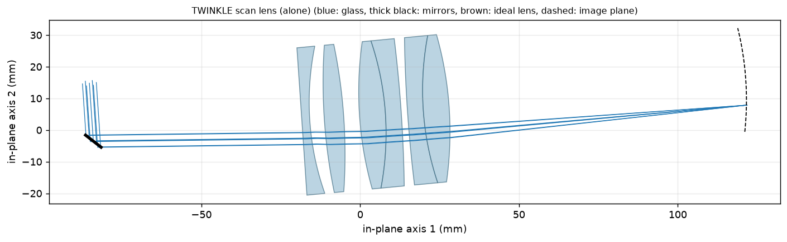
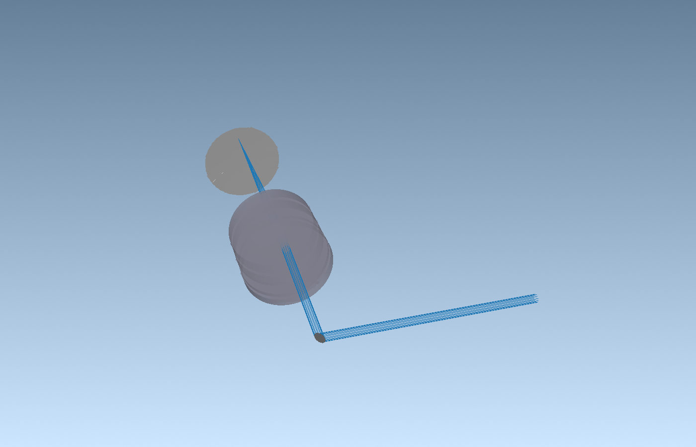
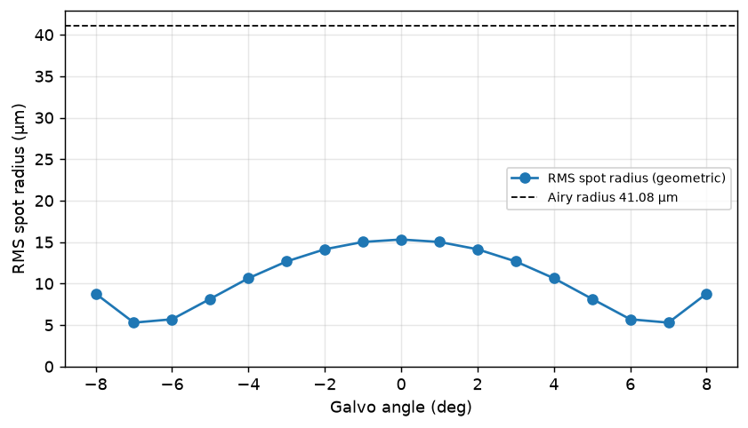
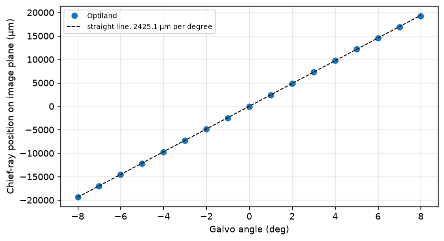
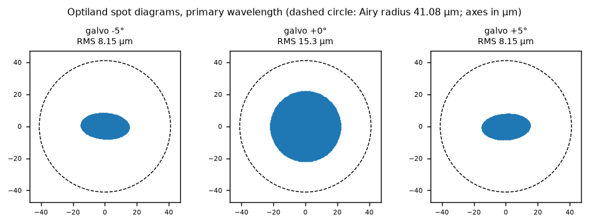

Optiland vs Zemax
TWINKLE scan lens (alone): Optiland against Zemax
The galvo, relay and scan lens of the TWINKLE excitation path on their own, with the same file structure (18 galvo angles in the Zemax file). Optiland's ray tracing agrees with the one Zemax semi-diameter that can be scored. The galvo-mirror value cannot: it looks stale in the Zemax file. Wavefront and PSF are blocked, as for the full path.
- Wavefront, PSF, Strehl and FWHM. Optiland refuses to compute them on tilted or multi-fold systems, so Zemax's PSF plots cannot be compared. Cause: Optiland's paraxial engine (issue 8; upstream roadmap #865). Upstream: #865 (roadmap, with our comment), #1210.
- Optiland's 3D viewer. Shows only the first leg of the path and misplaces elements. Cause: not located (issue 10). Upstream: not yet filed.
- Galvo angles and tilted surfaces on import. Only configuration 1 loads and the tilted dichroic is ignored unless our workaround rewrites the file first. Anything loading these files without the workaround is silently wrong. Cause: Optiland's Zemax reader silently drops them (issues 5 to 7). Upstream: #1247.
Zemax check: verdict by quantity
Zemax stores, for every surface whose semi-diameter is automatic, the largest ray radius it computed. We re-trace the same file in Optiland (all fields and wavelengths, 40-ring hexapolar pupil) and take the largest local ray radius. Those values come from the file itself, so they are exact Zemax output, not read off a plot. Status is computed from the tolerances in comparison.json: match within 0.5%, partial within 5%.
| Quantity | Zemax | Optiland | Difference | Result |
|---|---|---|---|---|
| Semi-diameter, surface 1 (mm)Zemax: DIAM stored in the .ZMX (computed by Zemax) | 2.1950 | 2.1950 | 0.00% | Match |
| Semi-diameter, surface 17 (mm)Zemax: DIAM stored in the .ZMX (computed by Zemax) | 17.0202 | 17.0202 | 0.00% | Match |
Surface 4: Zemax 2.2278 mm, Optiland 3.1274 mm. The stored Zemax value (2.2278 mm) is close to the bare beam radius (2.195 mm), what a mirror at normal incidence would give, not the 1.414 x larger footprint on a 45 degree mirror. Every later surface agrees with Optiland to four digits, and the excitation file's value for the same mirror and beam (3.1042 mm) equals Optiland's 45 degree footprint. We think this stored value was not refreshed after the break was inserted; the cause is not established.
Optiland detail: what works
| Requirement | Status | Notes |
|---|---|---|
| Load the file | Works | Loads. Same tilt and pickup caveats as the excitation path. |
| Galvo angle (18 configurations) | Works, patched | Written into the file text and reloaded for each angle. |
| Real-ray trace, all 17 distinct galvo angles | Works | 1801 of 1801 rays reach the image at every angle. |
| Semi-diameter on automatic surfaces | Works | The scan-lens image plane matches exactly. The galvo mirror is not scored (see above). |
| RMS spot vs galvo angle | Works | Geometric. |
| RMS wavefront, Strehl, PSF | Blocked | Paraxial engine rejects the tilts (issue 8). |
| Optiland 3D viewer | Not working | See the layout section. |
System layout
WorksDrawn by this repository from Optiland's surface positions, sags and ray coordinates (Optiland's own draw fails on folds, issue 9). Glass is filled between surfaces, thick black lines are mirrors, the brown arrow-line is the ideal objective and the dashed line is the image plane. Everything is projected onto the plane of the folds.

Show Optiland's own 3D viewer (incomplete for this system)

optiland_issues_found.md). The projected layout above, drawn from the same ray coordinates, shows the whole path.Spots and scan linearity
WorksThe beam is focused by the scan lens (image NA 0.014, Airy radius 41 µm). Geometric RMS radius is 5.3 to 15.3 µm over ±8° of galvo angle; the chief ray moves 2412 µm per degree. There is no Zemax number to set against these, only the file's own semi-diameter.



Optiland issues found
Full details are in optiland_issues_found.md (issues 5 to 10 are new with these designs).
- 5. Surface tilts (SCBD) ignored. The tilted dichroic loads untilted, with no warning. Patched locally Upstream: #1247.
- 6. Parameter pickups (PPAR) ignored. Only matters when a value is edited. Patched locally Upstream: #1247.
- 7. Multi-configuration data dropped. Only configuration 1 loads; the galvo angles are configurations. Worked around Upstream: #1247.
- 8. Paraxial engine refuses tilted systems. Blocks wavefront, PSF and Strehl on the tilted galvo systems. Open Upstream: #865 (roadmap, with our comment), #1210.
- 9. 2D layout mangles folded systems. This page draws its own projection. Worked around Upstream: not yet filed.
Semi-diameters, every automatic surface
The same comparison as the verdict table, with the ratio, including any row that was not scored.
| Zemax surface | Comment | Zemax (mm) | Optiland (mm) | Ratio | |
|---|---|---|---|---|---|
| 1 | 2.1950 | 2.1950 | 1.0000 | ||
| 4 | 2.2278 | 3.1274 | 1.4038 | not scored | |
| 17 | 17.0202 | 17.0202 | 1.0000 |
Lens data
Prescription as stored in the Zemax file (coordinate breaks left out; Optiland absorbs them into the neighbouring surfaces). The Optiland radius is read back from the loaded model, so a difference would show an import error. Thicknesses are signed Zemax values: negative after a mirror.
| Zemax # | Comment | Type | Radius, Zemax (mm) | Radius, Optiland (mm) | Thickness (mm) | Glass | Semi-diameter (mm) | Clear aperture (mm) |
|---|---|---|---|---|---|---|---|---|
| 0 | STANDARD | ∞ | ∞ | ∞ | 0 | |||
| 1 | STANDARD | ∞ | ∞ | 20 | 2.195 | |||
| 4 | STANDARD | ∞ | ∞ | 0 | MIRROR | 2.228 | ||
| 7 | STANDARD | ∞ | ∞ | -2.5 | BK7 | 25.4 (fixed) | 25.4 | |
| 8 | KPC070AR.16 | STANDARD | -103.36 | -103.36 | -4.599 | 25.4 (fixed) | 25.4 | |
| 9 | LB1199-B | STANDARD | -204.98 | -204.98 | -6.16 | N-BK7 | 25.4 (fixed) | 25.4 |
| 10 | STANDARD | 204.98 | 204.98 | -5 | 25.4 (fixed) | 25.4 | ||
| 11 | AC508-200-B | STANDARD | -134 | -134 | -8.2 | N-LAK22 | 25.4 (fixed) | 25.4 |
| 12 | STANDARD | 109.2 | 109.2 | -5 | N-SF6HT | 25.4 (fixed) | 25.4 | |
| 13 | The SL-TL telescope | STANDARD | 515.2 | 515.2 | -2 | 25.4 (fixed) | 25.4 | |
| 14 | is exactly 2X | STANDARD | -515.2 | -515.2 | -5 | N-SF6HT | 25.4 (fixed) | 25.4 |
| 15 | see Disatnce2 file | STANDARD | -109.2 | -109.2 | -8.2 | N-LAK22 | 25.4 (fixed) | 25.4 |
| 16 | AC508-200-B | STANDARD (stop) | 134 | 134 | -93.9831 | 25.4 (fixed) | 25.4 | |
| 17 | STANDARD | 113.236 | 113.236 | 0 | 17.02 |
Reproduce
export UV_PROJECT_ENVIRONMENT=~/uv_venvs/evaluation_mac uv run python -m evaluation_tools.analyze_zmx designs/twinkle_scan_lens # about 1 to 3 minutes uv run python -m evaluation_tools.build_summary # regenerates all HTML
zemax_text.py holds the workarounds for features Optiland ignores (tilted surfaces, pickups, configurations). analyze_zmx.py runs the analysis and build_generic.py writes this page. The Zemax files come from the TWINKLE repository.